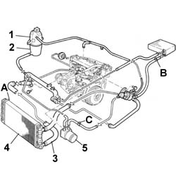

0010T20 COOLANT CHECK DENSITY AND TOP UP IF NECESSARY
- Path
- Procedures > 00 MAINTENANCE > 0010 UNITA' NUOVE E MANUT. PROGRAMMATA > 0010T VEHICLE OIL AND FLUIDS > 0010T20 COOLANT CHECK DENSITY AND TOP UP IF NECESSARY
- Kind
- repair procedure (removal / refitting; the operation number is the code)
- Applies to
- all engines; all production periods
- Interactive page
- https://sloeber94.github.io/elrnDB-fMltpl/en/#/2891161
Applies to: all engines; production: fino a 05/04
Place the car on a lift.
With the engine cold, remove the expansion tank cap.
Raise the car.
Disconnect the lower radiator hose and drain the engine coolant into a suitable container.
Connect the lower radiator hose.
Lower the vehicle.
Open the cooling system bleed valves.
Applies to: engines: 1.6 16v; production: da 06/04
Emptying
Position the vehicle on a lift.
Open the bonnet.
With the engine cold, remove plug (1) from the engine coolant reservoir (2).
Arrange a suitable container to collect the coolant.
Open the retaining strip, disconnect the lower sleeve (3) from the radiator (4) and drain the coolant.
To remove the coolant faster, open the bleed fittings:
(A), on the radiator;
(B) on the return pipe from the heater.
Applies to: engines: 1.6 16v; production: da 06/04; only with equipment: Air Conditioner
Filling
Connect the lower sleeve to the radiator and tighten the retaining band.
Fill the cooling circuit with coolant (50:50 mixture of demineralised water and PARAFLU UP) through the supply reservoir filler fitting, keeping the level below the MIN notch until the fluid emerging from bleed fitting (A) on the radiator is free of air bubbles.
Close bleed valve (A).
Proceed with the filling operation until the fluid emerging from bleed fitting (B) on the return pipe from the heater is free of air bubbles
Close bleed valve (B).
Tighten the cap on the supply reservoir filler fitting.
Start the engine and allow to idle. Pump the accelerator gradually (approximately every 30 seconds) up to a speed of 3000 rpm to activate the coolant circulation.
Repeat this operation u ntil the radiator fan has come on at least three times to ensure opening of the thermostat releases any residual air present in the circuit.
Stop the engine.
Allow the engine to cool down and top up the coolant to the MAX notch on the supply reservoir.
Applies to: engines: 1.9 JTD 8V; production: da 06/04; only with equipment: Heater
Emptying
Position the vehicle on a lift.
Open the bonnet.
With the engine cold, remove plug (1) from the engine coolant reservoir (2).
Arrange a suitable container to collect the coolant.
Open the retaining strip, disconnect the lower sleeve (3) from the radiator (4) and drain the coolant.
To remove the coolant faster, open the bleed fittings:
(A), on the radiator;
(B) on the return pipe from the heater;
(C), located on the return pipe from the "Modine" water oil intercooler (5).

Applies to: engines: 1.9 JTD 8V; production: da 06/04; only with equipment: Heater
Filling
Connect the lower sleeve to the radiator and tighten the retaining band.
Fill the cooling circuit with coolant (50:50 mixture of demineralised water and PARAFLU UP) through the supply reservoir filler fitting, keeping the level below the MIN notch until the fluid emerging from bleed fitting (A) on the radiator is free of air bubbles.
Close bleed valve (A).
Continue filling until fluid free of bubbles emerges from the bleed fitting (C) located on the return pipe from the "Modine" water oil intercooler.
Close bleed valve (C).
Proceed with the filling operation until the fluid emerging from bleed fitting (B) on the return pipe from the heater is free of air bubbles
Close bleed valve (B).
Tighten the cap on the supply reservoir filler fitting.
Start up the engine and let it idle for about 2 minutes.
Then pump the accelerator gradually (every 30 seconds or so) to activate coolant circulation.
Repeat this operation u ntil the radiator fan has come on at least three times to ensure opening of the thermostat releases any residual air present in the circuit.
Stop the engine.
Allow the engine to cool down and top up the coolant to the MAX notch on the supply reservoir.
Applies to: engines: 1.9 JTD 8V; production: da 06/04; only with equipment: Air Conditioner
Emptying
Position the vehicle on a lift.
Open the bonnet.
With the engine cold, remove plug (1) from the engine coolant reservoir (2).
Arrange a suitable container to collect the coolant.
Unscrew the bleed plug in the lower part of radiator (3).
To remove the coolant faster, open the bleed fittings:
- (A e B), located on the radiator;
- (C), located on the return pipe from the "Modine" water oil intercooler (4).
- (D) on the return pipe from the heater;
Applies to: engines: 1.9 JTD 8V; production: da 06/04; only with equipment: Air Conditioner
Filling
Tighten the bleed plug in the lower part of radiator.
Fill the cooling circuit with coolant (50:50 mixture of demineralised water and PARAFLU UP) through the supply reservoir filler fitting, keeping the level below the MIN notch until the fluid emerging from bleed fittings (A and B) on the radiator is free of air bubbles.
Close bleed valves (A and B).
Continue filling until fluid free of bubbles emerges from the bleed fitting (C) located on the return pipe from the "Modine" water oil intercooler.
Close bleed valve (C).
Proceed with the filling operation until the fluid emerging from bleed fitting (D) on the return pipe from the heater is free of air bubbles
Close bleed valve (D).
Tighten the cap on the supply reservoir filler fitting.
Start up the engine and let it idle for about 2 minutes.
Then pump the accelerator gradually (every 30 seconds or so) to activate coolant circulation.
Repeat this operation u ntil the radiator fan has come on at least three times to ensure opening of the thermostat releases any residual air present in the circuit.
Stop the engine.
Allow the engine to cool down and top up the coolant to the MAX notch on the supply reservoir.